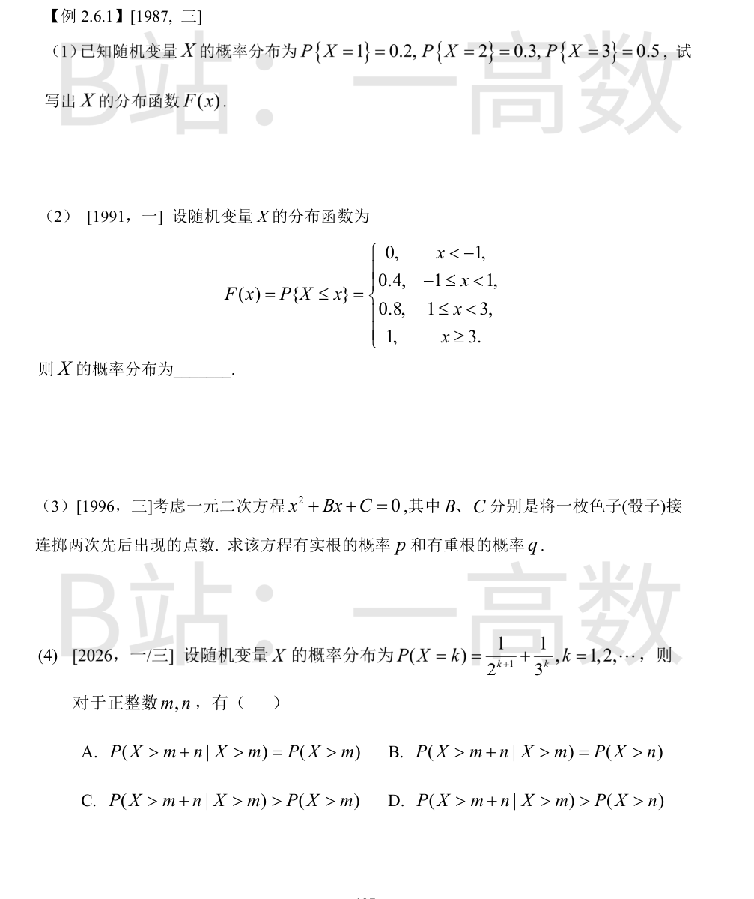
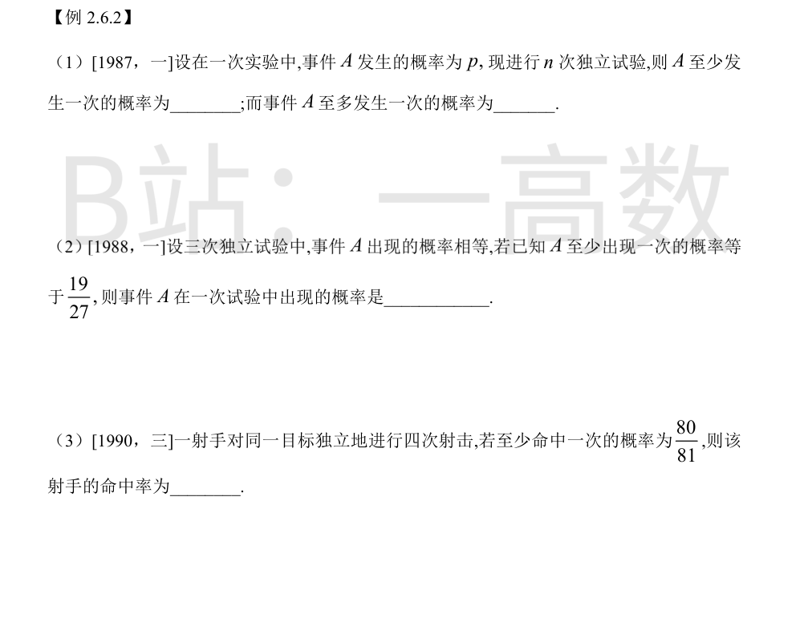
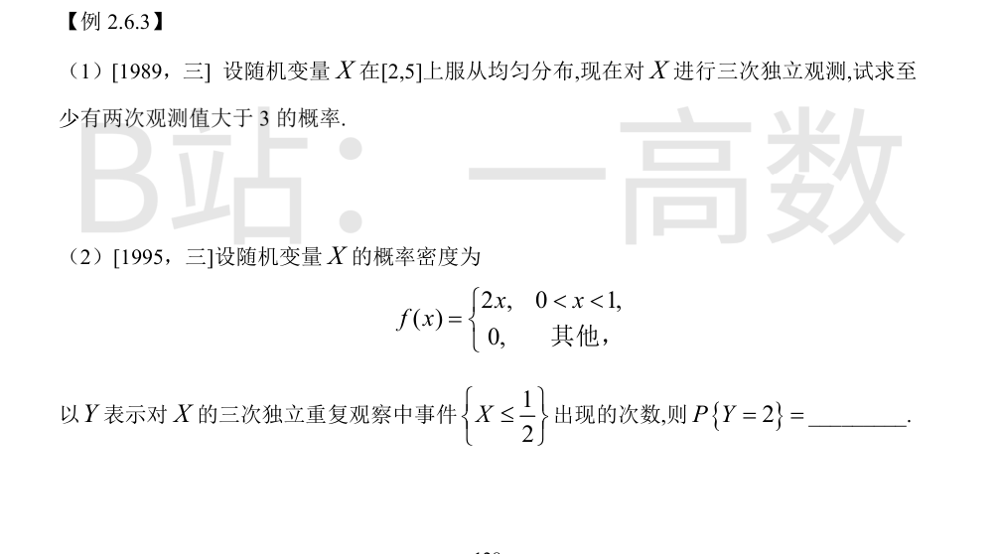
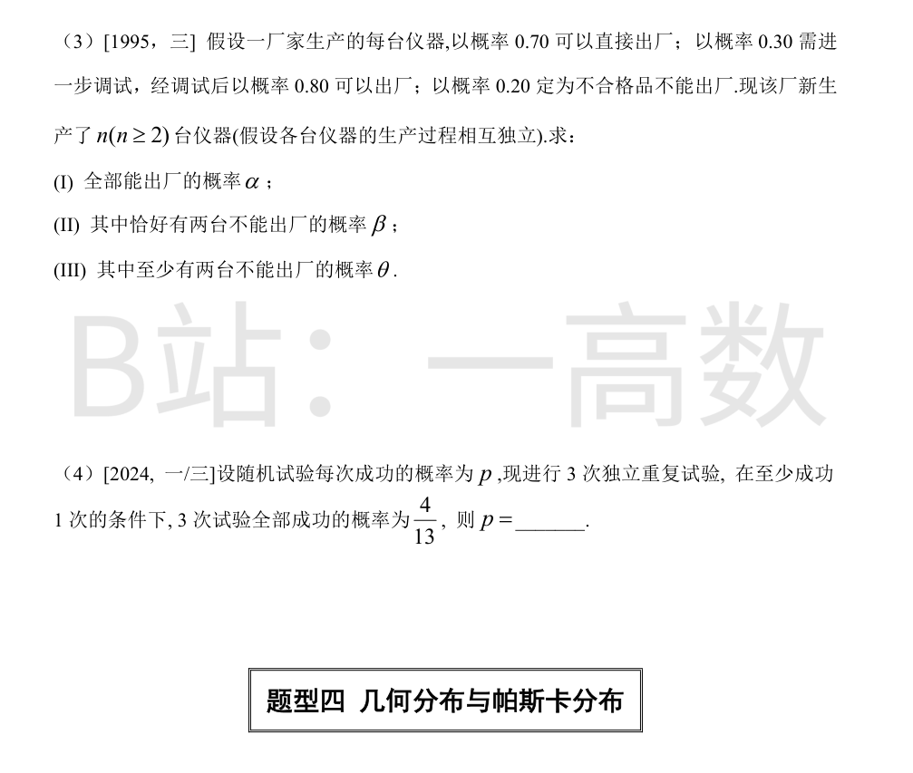
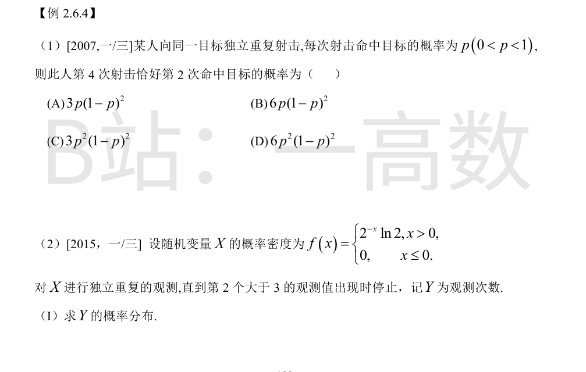
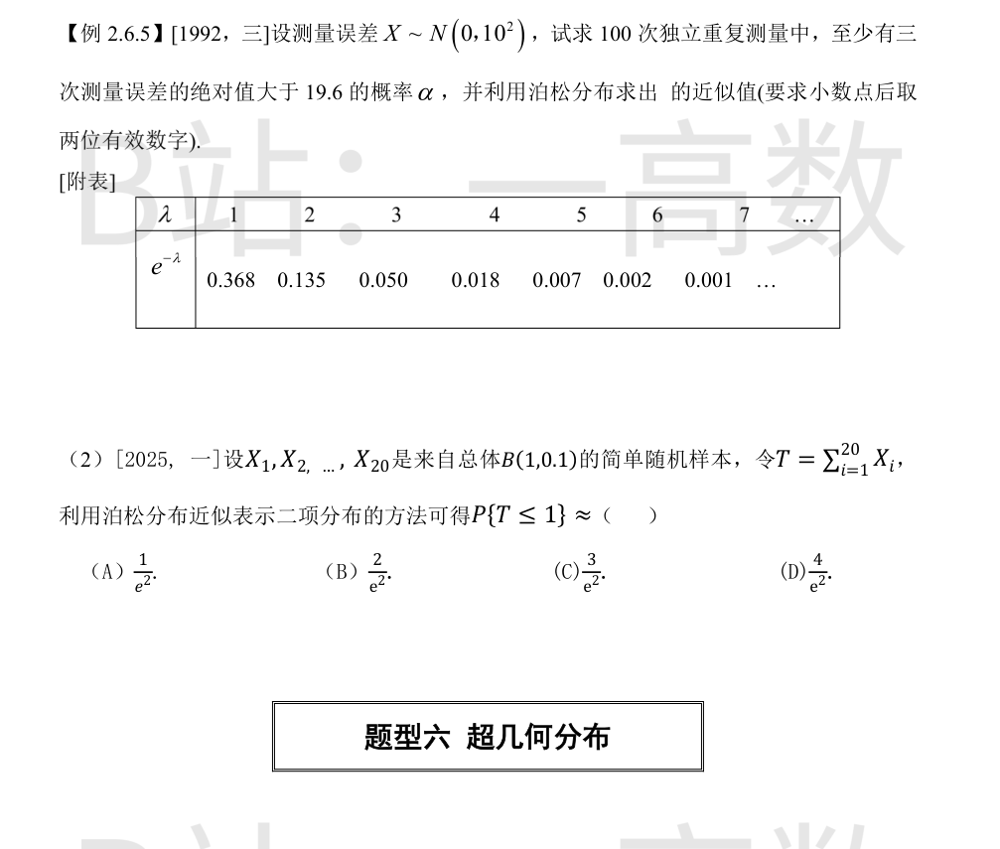
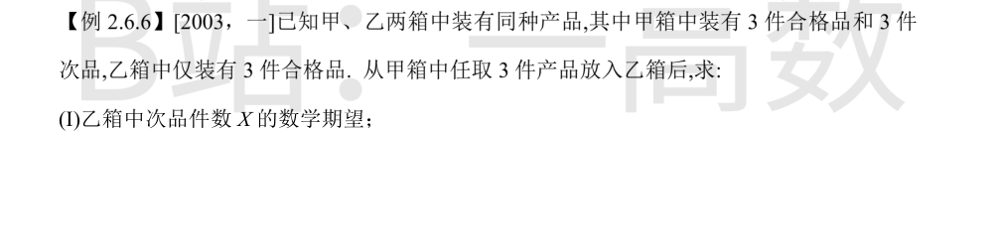

离散型分布函数 $F(x)=P\{X\le x\}$ 是阶梯函数，在每个取值点 $x_i$ 处跳跃，跳跃度等于 $P\{X=x_i\}$：
$$F(x)=\begin{cases}0, & x<1,\\ 0.2, & 1\le x<2,\\ 0.2+0.3=0.5, & 2\le x<3,\\ 1, & x\ge 3.\end{cases}$$
即 $F(x)$ 在 $x=1,2,3$ 处分别跳跃 $0.2, 0.3, 0.5$。
离散型随机变量的分布函数在取值点处跳跃，跳跃值即该点的概率：
$$P\{X=-1\}=F(-1)-F(-1^-)=0.4-0=0.4,$$
$$P\{X=1\}=F(1)-F(1^-)=0.8-0.4=0.4,$$
$$P\{X=3\}=F(3)-F(3^-)=1-0.8=0.2.$$
验证：$0.4+0.4+0.2=1$，构成合法分布。
基本事件总数 $6\times 6=36$。
有实根 $\Leftrightarrow \Delta=B^2-4C\ge 0\Leftrightarrow C\le B^2/4$。逐个统计 $B=1,\dots,6$ 时满足条件的 $C$ 的个数：
- $B=1$：$C\le 0.25$，0 个；
- $B=2$：$C\le 1$，1 个；
- $B=3$：$C\le 2.25$，2 个；
- $B=4$：$C\le 4$，4 个；
- $B=5$：$C\le 6.25$，6 个；
- $B=6$：$C\le 9$，6 个。
合计 $0+1+2+4+6+6=19$，故 $p=\dfrac{19}{36}$。
有重根 $\Leftrightarrow B^2=4C$，即 $C=B^2/4$：$B=2\Rightarrow C=1$ ✓；$B=4\Rightarrow C=4$ ✓；$B=6\Rightarrow C=9>6$ 舍去。共 2 组，故 $q=\dfrac{2}{36}=\dfrac{1}{18}$。
先求生存函数：
$$P(X>k)=\sum_{j=k+1}^{\infty}\left(2^{-(j+1)}+3^{-j}\right)=2^{-(k+1)}+\frac{1}{2}\cdot 3^{-k}.$$
于是
$$P(X>m+n\mid X>m)=\frac{2^{-(m+n+1)}+\frac12 3^{-(m+n)}}{2^{-(m+1)}+\frac12 3^{-m}}.$$
分子分母同乘 $2^{m+1}$，记 $c=\left(\frac23\right)^m\in(0,1)$，则条件概率 $=\dfrac{2^{-n}+c\cdot 3^{-n}}{1+c}$。与 $P(X>n)=\frac12 2^{-n}+\frac12 3^{-n}$ 作差：
$$P(X>m+n\mid X>m)-P(X>n)=\frac{\left(2^{-n}-3^{-n}\right)(1-c)}{2(1+c)}>0,$$
因为 $n\ge 1$ 时 $2^{-n}>3^{-n}$，且 $c<1$。
直观解释：$X$ 是「快衰减（几何 $p=1/2$）」与「慢衰减（几何 $p=1/3$）」各以 $1/2$ 权重的混合；存活到 $m$ 之后，快衰减分量被筛掉，条件存活概率大于按原混合算的 $P(X>n)$（不具有无记忆性，但严格大于 $P(X>n)$）。
再排除其余选项：条件概率与 $P(X>m)$ 的大小随 $n$ 变化不定（例如 $m=1, n=10$ 时条件概率 $\approx 0.00059 \ll P(X>1)\approx 0.417$），故 A、C 不成立；上面已证严格不等，B 不成立。选 D。
数值验证（$m=n=1$）：$P(X>2|X>1)=\frac{13/72}{5/12}=\frac{13}{30}\approx 0.433 > \frac{5}{12}\approx 0.417=P(X>1)$。✓

设 $Y$ 为 $n$ 次独立试验中 $A$ 发生的次数，则 $Y\sim B(n,p)$。
至少发生一次：
$$P(Y\ge 1)=1-P(Y=0)=1-(1-p)^n.$$
至多发生一次：
$$P(Y\le 1)=P(Y=0)+P(Y=1)=(1-p)^n+\binom{n}{1}p(1-p)^{n-1}=(1-p)^n+np(1-p)^{n-1}.$$
设一次试验中 $A$ 出现的概率为 $p$，则三次独立试验中至少出现一次的概率
$$1-(1-p)^3=\frac{19}{27},$$
故 $(1-p)^3=\dfrac{8}{27}=\left(\dfrac23\right)^3$，即 $1-p=\dfrac23$，解得 $p=\dfrac{1}{3}$。
设命中率为 $p$，四次独立射击至少命中一次的概率
$$1-(1-p)^4=\frac{80}{81},$$
故 $(1-p)^4=\dfrac{1}{81}=\left(\dfrac13\right)^4$，即 $1-p=\dfrac13$，$p=\dfrac23$。


一次观测值大于 3 的概率
$$p=P(X>3)=\frac{5-3}{5-2}=\frac{2}{3}.$$
设三次独立观测中大于 3 的次数为 $Y$，则 $Y\sim B\left(3,\frac23\right)$，
$$P(Y\ge 2)=\binom{3}{2}\left(\frac23\right)^2\cdot\frac13+\left(\frac23\right)^3=\frac{4}{9}+\frac{8}{27}=\frac{12+8}{27}=\frac{20}{27}.$$
单次观察中事件 $\left\{X\le \frac12\right\}$ 的概率
$$p=\int_0^{1/2}2x\,dx=\left[x^2\right]_0^{1/2}=\frac14.$$
三次独立重复观察中该事件出现的次数 $Y\sim B\left(3,\frac14\right)$，
$$P\{Y=2\}=\binom{3}{2}\left(\frac14\right)^2\cdot\frac34=3\cdot\frac{1}{16}\cdot\frac{3}{4}=\frac{9}{64}.$$
单台仪器能出厂的概率
$$p_0=0.70+0.30\times 0.80=0.94,$$
不能出厂的概率 $q_0=0.30\times 0.20=0.06$（验证 $p_0+q_0=1$）。各台仪器独立，设 $n$ 台中不能出厂的台数为 $Z$，则 $Z\sim B(n,0.06)$。
(I) 全部能出厂：$$\alpha=p_0^n=0.94^n.$$
(II) 恰好两台不能出厂：$$\beta=\binom{n}{2}\cdot 0.06^2\cdot 0.94^{n-2}.$$
(III) 至少两台不能出厂：
$$\theta=1-P(Z=0)-P(Z=1)=1-0.94^n-n\cdot 0.06\cdot 0.94^{n-1}.$$
由条件概率定义：
$$P(\text{全成功}\mid \text{至少一次成功})=\frac{p^3}{1-(1-p)^3}=\frac{4}{13}.$$
去分母：$13p^3=4\left[1-(1-p)^3\right]=4(3p-3p^2+p^3)$，整理得
$$9p^3+12p^2-12p=0\ \Rightarrow\ 3p\left(3p^2+4p-4\right)=0.$$
由 $0<p<1$，故 $3p^2+4p-4=0$，解得
$$p=\frac{-4+\sqrt{16+48}}{6}=\frac{4}{6}=\frac{2}{3}.$$
验证：$p^3=\frac{8}{27}$，$1-(1-p)^3=1-\frac{1}{27}=\frac{26}{27}$，比值 $=\frac{8}{26}=\frac{4}{13}$ ✓。

「第 4 次射击恰好第 2 次命中」$\Leftrightarrow$ 前 3 次射击中恰好命中 1 次，且第 4 次命中。由独立性：
$$P=\binom{3}{1}p(1-p)^2\cdot p=3p^2(1-p)^2.$$
对照选项：(A) 缺少一个 $p$ 因子且系数错；(B) 系数 6 错（前 3 次选 1 个命中位置是 $\binom{3}{1}=3$，不是 $\binom{4}{2}$）；(D) 系数 6 错。选 (C)。
单次观测值大于 3 的概率
$$p=P(X>3)=\int_3^{\infty}2^{-x}\ln 2\,dx=\left[-2^{-x}\right]_3^{\infty}=0+2^{-3}=\frac{1}{8}.$$
$Y$ 为直到第 2 个「大于 3」的观测出现时所需的观测次数，服从帕斯卡（负二项）分布：事件 $\{Y=k\}$ 表示第 $k$ 次观测出现第 2 个成功，且前 $k-1$ 次中恰有 1 次成功：
$$P\{Y=k\}=\binom{k-1}{1}\left(\frac18\right)^2\left(\frac78\right)^{k-2}=(k-1)\left(\frac18\right)^2\left(\frac78\right)^{k-2},\quad k=2,3,\ldots$$

单次测量误差绝对值大于 19.6 的概率：
$$p=P(|X|>19.6)=2\left[1-\Phi\left(\frac{19.6}{10}\right)\right]=2\left[1-\Phi(1.96)\right]=2\times 0.025=0.05.$$
设 100 次中 $|X|>19.6$ 的次数为 $Z$，则 $Z\sim B(100,0.05)$。用泊松分布近似（$\lambda=np=100\times 0.05=5$）：
$$\alpha=P(Z\ge 3)\approx 1-e^{-\lambda}\left(1+\lambda+\frac{\lambda^2}{2!}\right)=1-e^{-5}\times\left(1+5+\frac{25}{2}\right)=1-13.5\,e^{-5}.$$
查附表 $e^{-5}=0.007$：
$$\alpha\approx 1-13.5\times 0.007=1-0.0945\approx 0.91.$$
即 $\alpha\approx 0.91$（小数点后取两位有效数字）。
【仲裁修正】独立校验发现分歧，经仲裁重解，以本答案为准：solver 给 0.91 数值错误；\alpha=1-P\{Y\le 2\}=1-18.5e^{-5}\approx 0.875，A、B 的 \approx 0.87 正确
$X_i\sim B(1,0.1)$ 独立同分布，故 $T=\sum_{i=1}^{20}X_i\sim B(20,0.1)$。泊松定理中 $\lambda=np=20\times 0.1=2$：
$$P\{T\le 1\}=P\{T=0\}+P\{T=1\}\approx e^{-2}\frac{2^0}{0!}+e^{-2}\frac{2^1}{1!}=e^{-2}(1+2)=\frac{3}{e^2}.$$
选 (C)。

从甲箱（3 正 + 3 次，共 6 件）任取 3 件，乙箱中次品数 $X$ 服从超几何分布：
$$P\{X=k\}=\frac{\binom{3}{k}\binom{3}{3-k}}{\binom{6}{3}},\quad k=0,1,2,3.$$
$\binom{6}{3}=20$，各概率为 $P\{X=0\}=\frac{1}{20}$，$P\{X=1\}=\frac{9}{20}$，$P\{X=2\}=\frac{9}{20}$，$P\{X=3\}=\frac{1}{20}$。
$$E(X)=0\cdot\frac{1}{20}+1\cdot\frac{9}{20}+2\cdot\frac{9}{20}+3\cdot\frac{1}{20}=\frac{30}{20}=\frac{3}{2}.$$
（或直接用超几何分布期望公式 $E(X)=n\cdot\dfrac{K}{N}=3\times\dfrac{3}{6}=\dfrac32$。）